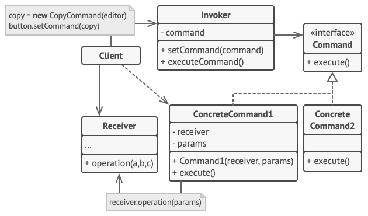

Command
Also known as Action or Transaction.
Turn a request into a stand-alone object that contains all information about the request.
Intent
The Command pattern converts a request into an object. This lets the request be passed around, stored, delayed, queued, logged, and used for undoable operations.
Problem
Imagine a text editor with buttons, menus, and keyboard shortcuts. Many different interface elements may need to perform the same operation.
If each element directly contains the operation's logic, the interface becomes tightly coupled to the receiver and the same logic may be duplicated.
Solution
Extract the request into a separate command object. The command stores the receiver and any required parameters and exposes a common execute() method.
The invoker knows only the Command interface. The client creates the concrete command and connects it to the invoker.
Real-World Analogy
A restaurant order works like a command. The waiter accepts an order and passes it to the kitchen. The order contains the information required to prepare the meal, while the waiter does not need to know how the chef performs the work.
Structure
The Command pattern consists of five main participants: Sender/Invoker, Command, Concrete Command, Receiver, and Client.

Responsible for initiating requests. It stores a reference to a command object and triggers the command instead of sending the request directly to the receiver.
Declares the common execution operation, usually execute().
Implements the command interface. It stores a receiver reference and request parameters, then delegates the actual operation to the receiver.
Contains the actual business logic and knows how to perform the operation.
Creates the receiver and concrete command objects and configures the invoker with the command.
Pseudocode
interface Command {
execute();
undo();
}
class ConcreteCommand implements Command {
receiver;
params;
execute() {
receiver.operation(params);
}
undo() {
receiver.restore();
}
}
class Invoker {
command;
setCommand(command) {
this.command = command;
}
executeCommand() {
command.execute();
}
}Applicability
- When you want to parameterize an object with an operation.
- When requests need to be queued or scheduled.
- When requests need to be logged or stored.
- When you need undo/redo functionality.
How to Implement
- Declare a command interface with a common execution method.
- Create concrete command classes for individual requests.
- Store the receiver and required parameters inside the concrete command.
- Give the invoker a command reference.
- Let the client create and connect the objects.
Java Implementation
interface Command {
void execute();
void undo();
}
class Light {
void turnOn() {
System.out.println("Light ON");
}
void turnOff() {
System.out.println("Light OFF");
}
}
class LightOnCommand implements Command {
private final Light light;
LightOnCommand(Light light) {
this.light = light;
}
public void execute() {
light.turnOn();
}
public void undo() {
light.turnOff();
}
}
class RemoteControl {
private Command command;
void setCommand(Command command) {
this.command = command;
}
void pressButton() {
command.execute();
}
void pressUndo() {
command.undo();
}
}
public class CommandDemo {
public static void main(String[] args) {
Light light = new Light();
Command command = new LightOnCommand(light);
RemoteControl remote = new RemoteControl();
remote.setCommand(command);
remote.pressButton();
remote.pressUndo();
}
}Expected output
Light ON Light OFF
Pros and Cons
Pros
- Separates senders from receivers.
- Supports command history and undo.
- Supports queued and delayed execution.
- New commands can be added without changing the invoker.
Cons
- Introduces additional classes.
- Simple operations may require extra command objects.
Relations with Other Patterns
- Chain of Responsibility: can pass requests through handlers, while Command packages a request as an object.
- Memento: can save receiver state for undo operations.
- Strategy: both encapsulate behavior, but Command represents a request while Strategy represents an interchangeable algorithm.
- Prototype: can be useful when command objects need to be copied.
- Visitor: provides a specialized mechanism for applying operations to object structures.
Quick Quiz
Which participant performs the actual business operation?